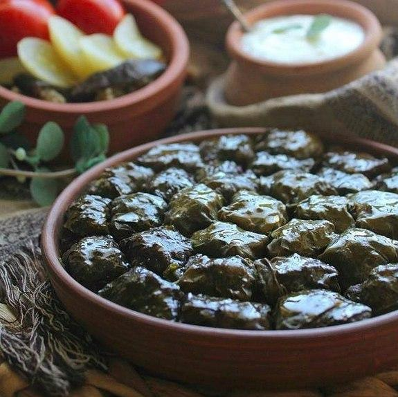

HOME
Dolma recipe

Description
Dolma is a traditional Azerbaijani dish made by stuffing vegetables or
leaves—most commonly grape leaves—with a flavorful mixture of ground meat,
rice, herbs, and spices. It’s known for its rich, tangy taste and is often
served with yogurt.
Ingredients
- Grape leaves (fresh or jarred)
- Ground lamb or beef (or a mix)
- Rice (uncooked or slightly rinsed)
- Onion (finely chopped)
- Fresh dill
- Fresh parsley
- Fresh mint
- Salt
- Black pepper
- Butter or oil
- Tomato (chopped or a little paste)
- Sumac or a splash of lemon juice (for tanginess)
- Garlic
- Plain yogurt or garlic yogurt sauce
Steps to prepare:
-
Prepare filling: Mix ground lamb or beef with rice, chopped onions,
fresh herbs (like dill, mint, parsley), salt, and pepper.
-
Prepare leaves: Rinse grape leaves and soften them in hot water if
needed.
-
Stuff: Place a small amount of filling on each leaf, fold the sides, and
roll tightly
-
Arrange in pot: Line a pot with extra leaves and place the rolls snugly
inside.
-
Cook: Add a little water or broth, cover, and simmer on low heat for
about 40–60 minutes.
-
Serve: Let rest slightly and serve warm, often with yogurt or garlic
sauc